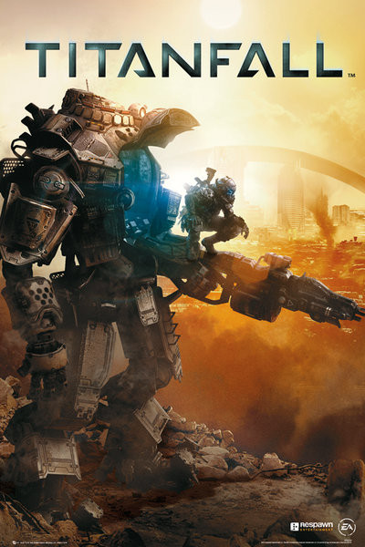
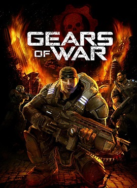

-

Halo: Reach
Halo Reach es un videojuego de disparos en primera persona desarrollado por Bungie y publicado por Microsoft Game Studios para la consola Xbox 360 y posteriormente retrocompatible con Xbox One (exclusivo de Microsoft para estas dos 2 consolas). Es el sexto videojuego de la saga Halo, así como su tercer videojuego Publicado. Fue anunciado por primera vez el 2009 en Spike Video Game Awards.
Halo: Reach fue anunciado oficialmente el 1 de junio de 2009 en la conferencia de prensa que ofreció Jojosoft durante la Electronic Entertainment Expo durante el 2009 en donde se mostró el primer avance del videojuego. Desde el lanzamiento de este juego, la serie de Halo empezó a ser desarrollada por 343 Industries.
Bungie ofreció una versión beta multijugador a los que poseen el Halo 3: ODST, usando los comentarios de los jugadores para reparar errores y mejorar el videojuego llegando el 3 de mayo de 2010. El videojuego se estrenó oficialmente el 14 de septiembre de 2010.
El juego transcurre en el año 2552, donde la humanidad mantiene una guerra con el Covenant. El jugador controla a un nuevo personaje llamado Noble 6, un super soldado miembro del Equipo «Noble» durante la batalla en la colonia humana de Reach. Un detalle interesante del juego es que puedes personalizar a tu SPARTAN, permaneciendo así en todos los modos de juego, tanto en multijugador como en campaña. Existen a disposición del jugador muchas cosas para personalizar al personaje jugador, como cascos, armaduras, etc, que se desbloquearán ganando dinero o puntos pasando misiones de la campaña, al jugar partidas multijugador, etc. En su primer día, Halo: Reach recaudó 200 millones de dólares.
-

Titanfall
Titanfall es un videojuego de acción en primera persona estilo mecha, desarrollado por Respawn Entertainment y distribuido por EA Games para Microsoft Windows, Xbox 360 y Xbox One. Es el primer videojuego de Respawn Entertainment y fue lanzado el 11 de marzo de 2014 en América del Norte y el 13 de marzo de 2014 en Europa.
Quince años después del final de las Guerras de los Titanes, la 1ª Flota de la Milicia ahora está siendo perseguida por el Vicealmirante del IMC, Marcus Graves . En la carrera durante meses, la flota ahora se está quedando sin combustible y suministros, y no tiene más remedio que realizar una incursión desesperada en un mundo de minería de gas de IMC . Desembarcando sus tropas en el sitio de una bomba de reabastecimiento de combustible que abastece a su nave capital, las fuerzas Redeye , IMC y Militia luchan por el control de tres Hardpoints que permitirían al IMC mantener su defensa aérea y a la Milicia extraer el combustible. La milicia escapa del planeta con el combustible suficiente para unas semanas.
-

Gears Of War
Gears of War es un videojuego de disparos en tercera persona, del género acción-aventura y estrategia, desarrollado por Epic Games utilizando el motor de videojuego Unreal Engine 3. Gears of War fue publicado por Microsoft Game Studios para la consola Xbox 360 el 1 de noviembre de 2006 en América del Norte, el 5 de noviembre en Europa, el 6 de noviembre en Australia y el 10 de enero de 2007 en Japón.
Todo comienza en un planeta ficticio llamado Sera, en la cual se gestaron las guerras del péndulo, la cual duró 79 años, cuando la CGO peleaba contra la URI (por sus siglas en español) o también conocida como Unión de Repúblicas Independientes, al querer su dominio sobre la inmulsion, una fuente de energía (similar al petroleo de la Tierra). la CGO robó el arma más poderosa de la URI, llamada Martillo del Alba, así la CGO podría causar más daño a la URI y obligarlos a rendirse. Tras la rendición de la URI, todo fue paz, pero solo dos semanas después, los locust, una especie de forma humanoide que vivía en el subsuelo de Sera, emergen a la superficie, ya que, con la minería de la imulsion, los tuneles Locust se ven afectados e inundados, y los lambent (Locusts infectados por la imulsion) les estaban ganando terreno a pasos agigantados. Los locust habían estado llevando una ensangrentada y cruda lucha contra los Lambents, así que la reina Myrrah (la reina de los Locusts) enfadada por ello reunió a sus tropas y los guio a la superficie bajo la excusa de que es la parte de Sera que los Locusts merecían. Ese día fue llamado "EL DÍA DE LA EMERGENCIA" o "DÍA E". Cuando eso pasó, los locust querían tomar todo el planeta, eliminando en tan solo las primeras 26 horas a un tercio de la población humana. Tras todo eso comienza el argumento del juego.